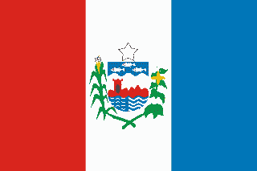

| Estado | População | Capital | Região | Bandeira |
|---|---|---|---|---|
| Acre | 500.000 | Rio Branco | Norte | |
| Alagoas | 3.127.683 | Maceió | Nordeste |  |
| Amapá | 877.613 | Macapá | Norte | |
| Amazonas | 4.085.011 | Manaus | Norte | |
| Bahia | 14.930.634 | Salvador | Nordeste | |
| Ceará | 9.240.580 | Fortaleza | Nordeste | |
| Espírito Santo | 4.064.052 | Vitória | Sudeste | |
| Goiás | 7.113.540 | Goiânia | Centro-Oeste | |
| Maranhão | 7.292.999 | São Luís | Nordeste | |
| Minas Gerais | 21.292.666 | Belo Horizonte | Sudeste | |
| Pará | 8.602.866 | Belém | Norte | |
| Paraíba | 4.039.277 | João Pessoa | Nordeste | |
| Paraná | 11.516.840 | Curitiba | Sul | |
| Pernambuco | 9.616.621 | Recife | Nordeste | |
| Piauí | 3.271.014 | Teresina | Nordeste | |
| Rio de Janeiro | 17.366.189 | Rio de Janeiro | Sudeste | |
| Rio Grande do Norte | 3.534.265 | Natal | Nordeste | |
| Rio Grande do Sul | 11.423.025 | Porto Alegre | Sul | |